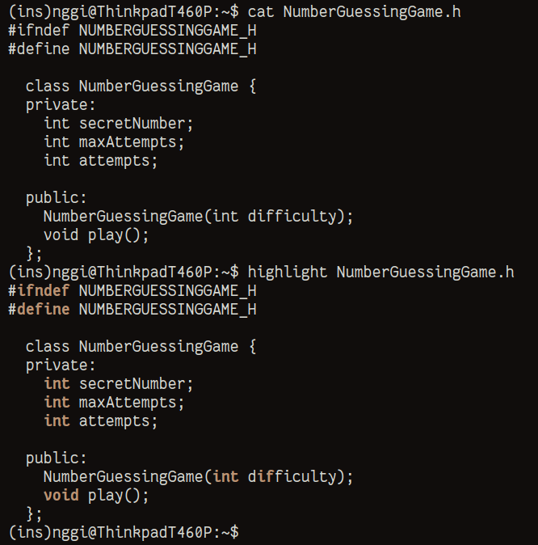

+------------------------------------------------------------------------------+ | | | /home/sukalaper blog/ paper/ about/ | | | +------------------------------------------------------------------------------+ Membuat Sebuah Skrip Penyorotan Sintaksis Sederhana Dengan Bantuan Bash ________________________________________________________________________________ Dalam penggunaan terminal, kita tidak lepas dari menulis dan melihat sebuah file. Tentu saja saya sering menggunakan perintah ini : $ cat my-file.txt Are you okay? No, next questions. $ cat NumberGuessingGame.h #ifndef NUMBERGUESSINGGAME_H #define NUMBERGUESSINGGAME_H class NumberGuessingGame { private: int secretNumber; int maxAttempts; int attempts; public: NumberGuessingGame(int difficulty); void play(); }; #endif // NUMBERGUESSINGGAME_H Perintah tersebut digunakan untuk melihat isi sebuah file. Namun, itu menjadi membosankan karena tidak ada pewarnaan sintaksis. Sangat subjektif, bukan? Alih-alih memasang paket bantuan seperti : 1. bat [1] 2. pygmentize [2] Mengapa tidak mengandalkan bantuan dari Bash dan grep (grep --color)? 1. Buat sebuah file pada .local/bin dengan nama highlight.sh 2. Isi file tersebut dengan baris ini : #!/bin/bash cat "$1" | grep --color=always -E 'ifndef|define||function|if|else| return|for|while|#include|int| float|char|void|\b[A-Z]+\b|$' 3. Beri hak akses pada file tersebut : $ chmod +x ~/.local/bin/highlight.sh Jika teman-teman sudah melakukan konfigurasi $PATH pada ~/.local/bin maka teman-teman cukup gabungan perintah seperti ini : $ highlight contoh.cpp Maka keluaran kurang lebih akan seperti ini :
Ya lumayan lah yaa. [1] https://github.com/sharkdp/bat [2] https://pygments.org/ ________________________________________________________________________________ Sukalaper © 2024, All rights reserved.